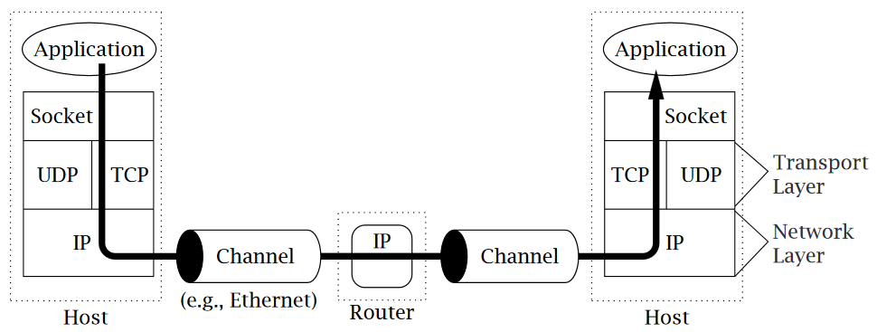
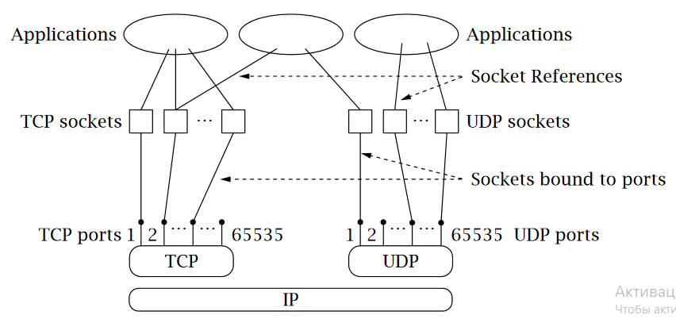

В течение многих лет курсы компьютерных сетей в колледжах преподавались практически без практического опыта. По разным причинам, в том числе и веским, преподаватели подходили к принципам компьютерных сетей в первую очередь через уравнения, анализы и абстрактные описания стеков протоколов. Учебники могли включать код, но он не был бы связан ни с чем, до чего учащиеся могли бы дотянуться. Однако мы считаем, что учащиеся лучше учатся, когда видят (а затем строят) конкретные примеры принципов в действии. И, к счастью, все изменилось. Интернет стал частью повседневной жизни, и доступ к его услугам легко доступен для большинства студентов (и их программ). Кроме того, в свободном доступе имеется множество примеров — хороших и плохих — нетривиального программного обеспечения.
Мы написали эту книгу по той же причине, по которой написали книгу «Сокеты TCP/IP» на языке C: нам нужен был ресурс для поддержки изучения сетей с помощью упражнений по программированию в наших курсах. Наша цель состоит в том, чтобы предоставить достаточно вводной информации, чтобы учащиеся могли получить доступ к реальным сетевым службам без особых усилий. Овладев основами, учащиеся могут перейти к более сложным заданиям, которые помогут изучить алгоритмы маршрутизации, мультимедийные протоколы, управление доступом к среде и т. д. Мы попытались сделать эту книгу эквивалентной нашей предыдущей книге, чтобы преподаватели могли позволить учащимся выбирать язык, который они используют, и при этом гарантировать, что все учащиеся получат одинаковые навыки и понимание. Конечно, неясно, достижима ли эта цель, но в любом случае объем, цена и уровень подачи книги должны быть одинаковыми.
Эта книга рассчитана на две аудитории. Первый, который побудил нас написать его в первую очередь, состоит из студентов бакалавриата или магистратуры по компьютерным сетям. Второй состоит из практиков, которые кое-что знают о Java и хотят научиться писать Java-приложения, использующие Интернет. Мы постарались сделать книгу краткой и целенаправленной, чтобы студенты могли использовать ее в качестве дополнительного текста, а практикующие врачи — в качестве недорогого введения в предмет. Поэтому не стоит ожидать, что вы станете экспертом после прочтения этой книги! Цель состоит в том, чтобы увести пользователей достаточно далеко, чтобы они могли начать экспериментировать и учиться самостоятельно.
Предполагается, что читатели имеют доступ к компьютеру, оснащенному Java. Эта книга основана на Java версии 1.6 и виртуальной машине Java (JVM); однако код должен работать с более ранними версиями Java, за исключением нескольких новых методов Java. Java — это переносимость, поэтому конкретное оборудование и операционная система (ОС), на которых вы работаете, не должны иметь значения.
В главе 1 представлен общий обзор сетевых концепций. Это никоим образом не является полным введением, а скорее предназначено для того, чтобы читатели могли синхронизироваться с понятиями и терминологией, используемыми на протяжении всей книги. Глава 2 знакомит с механикой простых клиентов и серверов; код в этой главе может служить отправной точкой для множества упражнений. В главе 3 рассматриваются основы построения и разбора сообщений. Читатель, прочитавший первые три главы, в принципе должен уметь реализовать клиент и сервер для заданного (простого) прикладного протокола. В главах 4 и 5 затем рассматриваются все более изощренные методы создания масштабируемых и надежных клиентов и серверов, а в главе 5 основное внимание уделяется возможностям, предоставляемым пакетами «Новый ввод-вывод». Наконец, в соответствии с нашей целью проиллюстрировать принципы с помощью программирования, в главе 6 более подробно обсуждается взаимосвязь между конструкциями программирования и реализацией лежащего в их основе протокола.
Наш общий подход знакомит с концепциями программирования через простые примеры программ, сопровождаемые построчными комментариями, описывающими назначение каждой части программы. Это позволяет вам видеть важные объекты и методы по мере их использования в контексте. Глядя на код, вы должны понимать назначение каждой строки.
В наших примерах не используются все возможности библиотек Java. Некоторые из этих средств, в частности сериализация, фактически требуют, чтобы все взаимодействующие одноранговые узлы были реализованы на Java. Кроме того, чтобы представить примеры как можно раньше, мы хотели избежать создания большого количества методов и классов, в которых придется разбираться позже. Мы старались сделать его простым, особенно в первых главах.
Чтобы удержать цену этой книги в разумных пределах для дополнительного текста, нам пришлось ограничить ее объем и сосредоточиться на целях, изложенных выше. Мы опустили многие темы и направления, поэтому, вероятно, стоит упомянуть о некоторых вещах, которых нет в этой книге:
Это не введение в язык Java. Особое внимание мы уделяем программированию сокетов TCP/IP. Мы ожидаем, что читатель уже знаком с функциями языка и базовыми библиотеками Java, в том числе с теми (например, универсальными), которые были представлены в более поздних версиях, и знает, как разрабатывать программы на Java.
Это не книга о протоколах. Чтение этой книги не сделает вас экспертом в области IP, TCP, FTP, HTTP или любого другого существующего протокола (кроме, может быть, эхо-протокола). Наше внимание сосредоточено на интерфейсе для служб TCP/IP, предоставляемых абстракцией сокетов. Будет полезно, если вы начнете с некоторого представления об общих принципах работы TCP и IP, но глава 1 может стать адекватной заменой.
Это не справочник по всей богатой коллекции библиотек Java, предназначенных для сокрытия коммуникационных деталей (например, HTTPConnection) и облегчения жизни программиста. Поскольку мы обучаем основам разработки протоколов, а не тому, как их избежать, мы не рассматриваем эти части API. Мы хотим, чтобы читатели понимали протоколы с точки зрения того, что передается по сети, поэтому мы в основном используем простые потоки байтов и явно работаем с кодировками символов. Как следствие, этот текст не имеет отношения к URL, URLConnection и так далее. Мы считаем, что как только вы поймете принципы, использование этих удобных классов станет простым.
Это не книга по объектно-ориентированному проектированию. Мы сосредоточимся на важных принципах программирования сокетов TCP/IP, и наши примеры призваны кратко их проиллюстрировать. Насколько это возможно, мы стараемся придерживаться принципов объектно-ориентированного проектирования; однако, когда это добавляет сложности, которые запутывают принципы сокетов или раздувают код, мы жертвуем дизайном ради ясности. В этом тексте не рассматриваются шаблоны проектирования для сетей. (Хотя нам хотелось бы думать, что это обеспечивает некоторый фон, необходимый для понимания таких паттернов!)
Это не книга по написанию кода производственного качества. Опять же, хотя мы стремимся к минимальному уровню надежности, основной целью наших примеров кода является обучение. Чтобы не загромождать принципы большим количеством кода обработки ошибок, мы пожертвовали надежностью ради краткости и ясности.
Это не книга о том, как сделать собственную реализацию сокетов в Java. Мы фокусируемся исключительно на сокетах TCP/IP, предоставляемых стандартным дистрибутивом Java, и не рассматриваем различные классы-оболочки реализации сокетов (например, SocketImpl).
Чтобы не загромождать примеры посторонним (не связанным с сокетами программированием) кодом, мы сделали их на основе командной строки. Хотя веб-сайт книги books.elsevier.com/companions/9780123742551 содержит несколько примеров сетевых приложений с расширенным графическим интерфейсом, мы не включаем и не объясняем их в этом тексте.
Это не книга по апплетам Java. Апплеты используют один и тот же сетевой API Java, поэтому коммуникационный код должен быть очень похожим; однако существуют строгие ограничения безопасности на виды связи, которые может выполнять апплет. Мы предоставляем очень ограниченное обсуждение этих ограничений и один пример апплета/приложения на веб-сайте; однако полное описание сетевых апплетов выходит за рамки этого текста.
Мы хотели бы поблагодарить всех людей, которые помогли сделать эту книгу реальностью. Несмотря на краткость книги, на рассмотрение первоначального предложения и черновика ушло много часов, и вклад рецензентов существенно повлиял на окончательный результат.
Благодарности: Мишелю Барбо, Крису Эдмондсону-Юрканан, Теду Херману, Дэйву Холлингеру, Джиму Леоне, Дэну Шмидту, Эрику Вагнеру, EDS; Классы CSI4321 в Университете Бейлора и классы CS 471 в Университете Кентукки. Любые оставшиеся ошибки, конечно же, являются нашей ответственностью.
Эта книга не сделает вас экспертом — для этого нужны годы опыта. Однако мы надеемся, что он будет полезен как ресурс даже тем, кто уже немного знаком с использованием сокетов в Java. Нам обоим нравилось ее писать, и мы многому научились.
Мы приветствуем ваши предложения по улучшению любого аспекта этой книги. Если вы нашли ошибку, пожалуйста, сообщите нам об этом. Мы будем поддерживать список опечаток на веб-сайте книги. Вы можете отправить отзыв через веб-страницу книги books.elsevier.com/companions/9780123742551 или написать нам по электронной почте по указанным ниже адресам:.
Kenneth L. Calvert - calvert@uky.edu
Michael J. Donahoo - Jeff_Donahoo@baylor.edu
Сегодня люди используют компьютеры, чтобы звонить по телефону, смотреть телевизор, отправлять мгновенные сообщения своим друзьям, играть в игры с другими людьми и покупать почти все, что только можно придумать — от песен до внедорожников. Способность программ общаться через Интернет делает все это возможным. Трудно сказать, сколько отдельных компьютеров сейчас доступно через Интернет, но можно с уверенностью сказать, что он быстро растет; это будет незадолго до того, как число будет исчисляться миллиардами. Более того, каждый день разрабатываются новые приложения. Учитывая постоянное увеличение пропускной способности и доступа, влияние Интернета в обозримом будущем будет продолжать расти.
Как программа взаимодействует с другой программой по сети? Цель этой книги — направить вас на путь понимания ответа на этот вопрос в контексте языка программирования Java. Язык Java с самого начала разрабатывался для использования в Интернете. Он предоставляет множество полезных абстракций для реализации программ, которые взаимодействуют через интерфейс прикладного программирования (API), известный как сокеты.
Однако, прежде чем мы углубимся в детали сокетов, стоит бросить беглый взгляд на общую картину сетей и протоколов, чтобы увидеть, где наш код подходит. Наша цель здесь не в том, чтобы научить вас, как работают сети и TCP/IP. — для этой цели доступно множество прекрасных текстов [4, 6, 12, 16, 17] — а скорее для введения некоторых основных понятий и терминологии.
Компьютерная сеть состоит из машин, соединенных между собой каналами связи. Мы называем эти машины хостами и маршрутизаторами. Хосты — это компьютеры, на которых запущены такие приложения, как ваш веб-браузер, ваш агент обмена мгновенными сообщениями или программа для обмена файлами. Прикладные программы, работающие на хостах, являются настоящими «пользователями» сети. Маршрутизаторы — это машины, чья работа заключается в ретрансляции или пересылке информации из одного канала связи в другой. Они могут запускать программы, но обычно не запускают прикладные программы. Для наших целей канал связи — это средство передачи последовательности байтов от одного хоста к другому; это может быть проводное (например, Ethernet), беспроводное (например, WiFi) или другое соединение.
Маршрутизаторы важны просто потому, что нецелесообразно напрямую подключать каждый хост к каждому другому хосту. Вместо этого несколько хостов подключаются к маршрутизатору, который подключается к другим маршрутизаторам и т. д., образуя сеть. Такое расположение позволяет каждой машине обходиться относительно небольшим количеством каналов связи; большинству хостов нужен только один. Однако программы, которые обмениваются информацией по сети, не взаимодействуют напрямую с маршрутизаторами и, как правило, пребывают в блаженном неведении об их существовании.
Под информацией мы подразумеваем последовательности байтов, которые создаются и интерпретируются программами. В контексте компьютерных сетей эти последовательности байтов обычно называются пакетами. Пакет содержит управляющую информацию, которую сеть использует для выполнения своей работы, а иногда также включает пользовательские данные. Примером может служить информация, идентифицирующая адресата пакета. Маршрутизаторы используют такую управляющую информацию, чтобы выяснить, как пересылать каждый пакет.
Протокол — это соглашение о пакетах, которыми обмениваются взаимодействующие программы, и о том, что они означают. Протокол сообщает, как структурированы пакеты, например, где в пакете находится информация о получателе и насколько он велик, а также как эту информацию следует интерпретировать. Протокол обычно предназначен для решения конкретной проблемы с использованием заданных возможностей. Например, протокол передачи гипертекста (HTTP) решает проблему передачи гипертекстовых объектов между серверами, где они хранятся или создаются, и веб-браузерами, которые делают их видимыми и полезными для пользователей. Протоколы обмена мгновенными сообщениями решают проблему предоставления возможности двум или более пользователям обмениваться короткими текстовыми сообщениями.
Реализация полезной сети требует решения большого количества различных задач. Чтобы все было управляемым и модульным, разные протоколы предназначены для решения разных наборов задач. TCP/IP является одним из таких наборов решений, иногда называемых набором протоколов. Это набор протоколов, используемых в Интернете, но его можно использовать и в автономных частных сетях. В дальнейшем, когда мы говорим о сети, мы имеем в виду любую сеть, использующую набор протоколов TCP/IP. Основными протоколами в наборе TCP/IP являются Интернет-протокол (IP) [14], протокол управления передачей (TCP) [15] и протокол пользовательских дейтаграмм (UDP) [13].
Оказывается полезным организовать протоколы по уровням; Таким образом организованы TCP/IP и практически все другие наборы протоколов. На рис. 1.1 показаны отношения между протоколами, приложениями и API сокетов (интерфейс прикладного программирования) в хостах и маршрутизаторах, а также поток данных от одного приложения (использующего TCP) к другому. Поля TCP, UDP и IP представляют реализации этих протоколов. Такие реализации обычно находятся в операционной системе хоста. Приложения получают доступ к службам, предоставляемым UDP и TCP, через API сокетов. Стрелка показывает поток данных из приложения, через реализации TCP и IP, через сеть и обратно через реализации IP и TCP на другом конце.
Рисунок 1.1: Сеть TCP/IP.
В TCP/IP нижний уровень состоит из нижележащих каналов связи, например Ethernet или модемных подключений. Эти каналы используются сетевым уровнем, который занимается проблемой пересылки пакетов к месту назначения (т. е. тем, что делают маршрутизаторы). Единственным протоколом сетевого уровня в наборе TCP/IP является Интернет-протокол; это решает проблему создания последовательности каналов и маршрутизаторов между любыми двумя хостами, похожей на один канал между хостами.
Интернет-протокол предоставляет услугу дейтаграмм: каждый пакет обрабатывается и доставляется сетью независимо, как письма или посылки, отправляемые через почтовую систему. Чтобы это работало, каждый IP-пакет должен содержать адрес получателя, точно так же, как каждый пакет, который вы отправляете по почте, адресован кому-либо. (Скоро мы поговорим об адресах подробнее.) Хотя большинство компаний по доставке гарантируют доставку пакета, IP — это только протокол с максимальной эффективностью: он пытается доставить каждый пакет, но может (и иногда так и происходит) потерять, переупорядочить или дублирование пакетов в пути через сеть.
Уровень выше IP называется транспортным уровнем. Он предлагает выбор между двумя протоколами: TCP и UDP. Каждый основан на услуге, предоставляемой IP, но они делают это по-разному, предоставляя разные виды транспорта, которые используются прикладными протоколами с разными потребностями. TCP и UDP имеют одну общую функцию: адресацию. Напомним, что IP доставляет пакеты хостам; ясно, что для доставки пакета конкретной прикладной программе, возможно, одной из многих, использующих сеть на том же хосте, требуется более точная адресация. И TCP, и UDP используют адреса, называемые номерами портов, для идентификации приложений внутри хостов. TCP и UDP называются сквозными транспортными протоколами, потому что они переносят данные на всем пути от одной программы к другой (тогда как IP переносит данные только от одного хоста к другому).
TCP предназначен для обнаружения и восстановления после потерь, дублирования и других ошибок, которые могут возникнуть в канале между хостами, обеспечиваемом IP. TCP обеспечивает надежный канал потока байтов, так что приложениям не приходится сталкиваться с этими проблемами. Это протокол, ориентированный на установление соединения: прежде чем использовать его для связи, две программы должны сначала установить TCP-соединение, что включает в себя завершение обмена сообщениями квитирования между реализациями TCP на двух взаимодействующих компьютерах. Использование TCP также во многом похоже на файловый ввод/вывод (I/O). На самом деле, файл, который записывается одной программой и читается другой, является разумной моделью связи по TCP-соединению. UDP, с другой стороны, не пытается исправить ошибки, с которыми столкнулся IP; он просто расширяет службу IP-дейтаграмм с наилучшими усилиями, чтобы она работала между прикладными программами, а не между хостами. Таким образом, приложения, использующие UDP, должны быть готовы к потерям, переупорядочиванию и т. д.
Когда вы отправляете письмо по почте, вы указываете адрес получателя в форме, понятной почтовой службе. Прежде чем вы сможете поговорить с кем-то по телефону, вы должны ввести телефонный номер в телефонную систему. Аналогичным образом, прежде чем программа сможет взаимодействовать с другой программой, она должна сообщить сети что-то, чтобы идентифицировать другую программу. В TCP/IP для идентификации конкретной программы требуются две части информации: Интернет-адрес, используемый IP, и номер порта, дополнительный адрес, интерпретируемый транспортным протоколом (TCP или UDP).
Интернет-адреса представляют собой двоичные числа. Они бывают двух видов, соответствующих двум стандартизированным версиям интернет-протокола. Самый распространенный тип — версия 4 («IPv4», [14]); другая — версия 6 («IPv6», [7]), развертывание которой только начинается. Адреса IPv4 имеют длину 32 бита; поскольку этого достаточно только для определения около 4 миллиардов различных пунктов назначения, они недостаточно велики для современного Интернета. (Это может показаться большим, но из-за того, как они распределяются, многие из них тратятся впустую. Более половины всего адресного пространства уже выделено.) По этой причине был введен IPv6. Адреса IPv6 имеют длину 128 бит.
При записи интернет-адресов для потребления человеком (в отличие от их использования внутри программ) для двух версий IP используются разные соглашения. Адреса IPv4 обычно записываются в виде группы из четырех десятичных чисел, разделенных точками (например, 10.1.2.3); это называется записью с точечной четверкой. Четыре числа в строке, разделенной точками, представляют собой содержимое четырех байтов интернет-адреса, поэтому каждое из них представляет собой число от 0 до 255.
С другой стороны, шестнадцать байтов адреса IPv6 представлены в виде групп шестнадцатеричных цифр, разделенных двоеточием (например, 2000:fdb8:0000:0000:0001:00ab:853c:39a1). Каждая группа цифр представляет два байта адреса; начальные нули могут быть опущены, поэтому пятая и шестая группы в приведенном выше примере могут отображаться просто как :1:ab:. Также можно вообще опустить последовательные группы, содержащие только нули (но это можно сделать только один раз в любом адресе). Таким образом, приведенный выше пример можно записать как 2000:fdb8::1:00ab:853c:39a1.
Технически каждый интернет-адрес относится к соединению между хостом и базовым каналом связи, другими словами, к сетевому интерфейсу. Хост может иметь несколько интерфейсов; например, хост нередко имеет подключения как к проводным (Ethernet), так и к беспроводным (WiFi) сетям. Поскольку каждое такое сетевое подключение принадлежит одному хосту, интернет-адрес идентифицирует хост, а также его подключение к сети. Однако обратное неверно, поскольку один хост может иметь несколько интерфейсов, а каждый интерфейс может иметь несколько адресов. (На самом деле один и тот же интерфейс может иметь адреса IPv4 и IPv6.)
Номер порта в TCP или UDP всегда интерпретируется относительно интернет-адреса. Возвращаясь к нашим более ранним аналогиям, номер порта соответствует номеру комнаты по данному адресу улицы, скажем, в большом здании. Почтовая служба использует почтовый адрес, чтобы доставить письмо в почтовый ящик; тот, кто опорожняет почтовый ящик, несет ответственность за доставку письма в нужную комнату в здании. Или рассмотрим компанию с внутренней телефонной системой: чтобы поговорить с сотрудником компании, вы сначала набираете основной номер телефона компании, чтобы подключиться к внутренней телефонной системе, а затем набираете добавочный номер конкретного телефона человека, с которым хотите поговорить. с. В этих аналогиях интернет-адрес — это почтовый адрес или основной номер компании, тогда как порт соответствует номеру комнаты или добавочному номеру телефона. Номера портов представляют собой 16-разрядные двоичные числа без знака, поэтому каждое из них находится в диапазоне от 1 до 65 535. (0 зарезервировано.)
В каждой версии IP определены определенные адреса специального назначения. Один из них, который стоит знать, — это петлевой адрес, который всегда назначается специальному петлевому интерфейсу, виртуальному устройству, которое просто возвращает переданные пакеты обратно отправителю. Интерфейс loopback очень удобен для тестирования, поскольку пакеты, отправленные на этот адрес, немедленно возвращаются обратно в место назначения. Более того, он присутствует на каждом хосте и может использоваться даже тогда, когда компьютер не имеет других интерфейсов (т.е. не подключен к сети). Адрес обратной связи для IPv4 — 127.0.0.1;1 для IPv6 это 0:0:0:0:0:0:0:1.
1Технически любой IPv4-адрес, начинающийся с 127, должен зацикливаться.
Другая группа адресов IPv4, зарезервированных для специальных целей, включает адреса, зарезервированные для «частного использования». В эту группу входят все IPv4-адреса, начинающиеся с 10 или 192.168, а также те, чей первый номер равен 172, а второй номер находится в диапазоне от 16 до 31. (Соответствующего класса для IPv6 нет.) Эти адреса изначально предназначались для использования в частные сети, не входящие в глобальную сеть Интернет. Сегодня они часто используются дома и в небольших офисах, которые подключены к Интернету через устройство преобразования сетевых адресов (NAT). Такое устройство действует как маршрутизатор, который транслирует (перезаписывает) адреса и порты в пакетах по мере их пересылки. Точнее, он сопоставляет пары (частный адрес, порт) в пакетах на одном из своих интерфейсов с парами (общедоступный адрес, порт) на другом интерфейсе. Это позволяет небольшой группе хостов (например, в домашней сети) эффективно «совместно использовать» один IP-адрес. Важность этих адресов заключается в том, что они недоступны из глобальной сети Интернет. Если вы испытываете код из этой книги на машине с адресом класса частного использования и пытаетесь установить связь с другим хостом, не имеющим ни одного из этих адресов, обычно вы добьетесь успеха только в том случае, если хост с частным адресом инициирует связь.
Связанный класс содержит локальные ссылки или адреса «автоконфигурации». Для IPv4 такие адреса начинаются с 169.254. Для IPv6 любой адрес, первый 16-битный блок которого начинается с FE8, является локальным адресом. Такие адреса могут использоваться только для связи между хостами, подключенными к одной и той же сети; маршрутизаторы не будут их пересылать.
Наконец, еще один класс состоит из многоадресных адресов. В то время как обычные IP-адреса (иногда называемые «индивидуальными») относятся к одному пункту назначения, многоадресные адреса потенциально относятся к произвольному количеству пунктов назначения. Многоадресная рассылка — это сложная тема, которую мы кратко рассмотрим в главе 4. В IPv4 адреса многоадресной рассылки в формате с четырьмя точками имеют первое число в диапазоне от 224 до 239. В IPv6 адреса многоадресной рассылки начинаются с FF.
Скорее всего, вы привыкли называть хосты по имени (например, host.example.com). Однако интернет-протоколы имеют дело с адресами (двоичными числами), а не с именами. Вы должны понимать, что использование имен вместо адресов — это удобная функция, которая не зависит от базовой службы, предоставляемой TCP/IP, — вы можете писать и использовать приложения TCP/IP, никогда не используя имя. Когда вы используете имя для идентификации конечной точки связи, система выполняет дополнительную работу по преобразованию имени в адрес. Этот дополнительный шаг часто стоит того по нескольким причинам. Во-первых, имена, очевидно, легче запомнить людям, чем четверки с точками (или, в случае IPv6, строки шестнадцатеричных цифр). Во-вторых, имена обеспечивают уровень косвенности, который изолирует пользователей от изменений IP-адресов. Во время написания первого издания этой книги адрес веб-сервера www.mkp.com изменился. Потому что мы всегда обращаемся к этому веб-серверу по имени, и потому что изменение быстро отразилось на сервисе, который сопоставляет имена с адресами (о чем мы скажем чуть позже — www.mkp.com разрешается в текущий интернет-адрес вместо 208.164). .121.48 — изменение незаметно для программ, использующих это имя для доступа к веб-серверу.
Служба разрешения имен может получать доступ к информации из самых разных источников. Двумя основными источниками являются система доменных имен (DNS) и локальные базы данных конфигурации. DNS [10] представляет собой распределенную базу данных, которая сопоставляет доменные имена, такие как www.mkp.com, с интернет-адресами и другой информацией; протокол DNS [11] позволяет узлам, подключенным к Интернету, получать информацию из этой базы данных с использованием TCP или UDP. Локальные базы данных конфигурации, как правило, являются специфическими для ОС механизмами сопоставления локальных имен и интернет-адресов.
В наших аналогиях с почтой и телефоном каждое общение инициируется одной стороной, которая отправляет письмо или делает телефонный звонок, в то время как другая сторона отвечает на контакт инициатора, отправляя ответное письмо или беря трубку и разговаривая. Интернет-коммуникации аналогичны. Термины «клиент» и «сервер» относятся к следующим ролям: программа-клиент инициирует связь, а программа-сервер пассивно ожидает и затем отвечает клиентам, которые связываются с ней. Вместе клиент и сервер составляют приложение. Термины «клиент» и «сервер» описывают типичную ситуацию, в которой сервер делает определенную возможность — например, службу базы данных — доступной для любого клиента, который может с ним взаимодействовать.
То, действует ли программа как клиент или сервер, определяет общую форму использования API сокетов для установления связи со своим партнером. (Клиент является равноправным сервером и наоборот.) Помимо этого, различие между клиентом и сервером важно, потому что клиенту нужно изначально знать адрес и порт сервера, а не наоборот. С помощью API сокетов сервер может, при необходимости, узнать информацию об адресе клиента, когда он получает начальное сообщение от клиента. Это аналогично телефонному звонку — чтобы ему позвонили, человеку не нужно знать номер телефона звонящего. Как и в случае телефонного звонка, после установления соединения различие между сервером и клиентом исчезает.
Как клиент узнает IP-адрес сервера и номер порта? Обычно клиент знает имя нужного ему сервера — например, из универсального указателя ресурсов (URL), такого как http://www.mkp.com, — и использует службу разрешения имен для получения соответствующего интернет-адреса.
Поиск номера порта сервера — это отдельная история. В принципе, серверы могут использовать любой порт, но клиент должен иметь возможность узнать, какой это. В Интернете принято назначать общеизвестные номера портов определенным приложениям. Управление по присвоению номеров в Интернете (IANA) наблюдает за этим назначением. Например, номер порта 21 был назначен протоколу передачи файлов (FTP). Когда вы запускаете клиентское приложение FTP, оно по умолчанию пытается связаться с FTP-сервером через этот порт. Список всех назначенных номеров портов поддерживается центром нумерации Интернета (см. http://www.iana.org/assignments/port-numbers).
Сокет — это абстракция, через которую приложение может отправлять и получать данные, почти так же, как дескриптор открытого файла позволяет приложению читать и записывать данные в постоянное хранилище. Сокет позволяет приложению подключаться к сети и взаимодействовать с другими приложениями, подключенными к той же сети. Информация, записанная в сокет приложением на одной машине, может быть прочитана приложением на другой машине и наоборот.
Разные типы сокетов соответствуют разным базовым наборам протоколов и разным наборам протоколов в наборе. В этой книге рассматривается только набор протоколов TCP/IP. Основными типами сокетов в TCP/IP сегодня являются потоковые сокеты и сокеты дейтаграмм. Потоковые сокеты используют TCP в качестве сквозного протокола (с IP под ним) и, таким образом, обеспечивают надежную службу потока байтов. Сокет потока TCP/IP представляет собой один конец соединения TCP. Сокеты дейтаграмм используют UDP (опять же, под IP) и, таким образом, предоставляют сервис дейтаграмм с максимальной эффективностью, который приложения могут использовать для отправки отдельных сообщений длиной примерно до 65 500 байт. Потоковые сокеты и сокеты дейтаграмм также поддерживаются другими наборами протоколов, но в этой книге рассматриваются только сокеты потоков TCP и сокеты дейтаграмм UDP. Сокет TCP/IP однозначно идентифицируется по интернет-адресу, сквозному протоколу (TCP или UDP) и номеру порта. По мере продвижения вы столкнетесь с несколькими способами привязки сокета к адресу.
Рисунок 1.2: Сокеты, протоколы и порты.
На рис. 1.2 показаны логические взаимосвязи между приложениями, абстракциями сокетов, протоколами и номерами портов на одном хосте. Обратите внимание, что на одну абстракцию сокета могут ссылаться несколько прикладных программ. Каждая программа, имеющая ссылку на конкретный сокет, может взаимодействовать через этот сокет. Ранее мы говорили, что порт идентифицирует приложение на хосте. На самом деле порт идентифицирует сокет на хосте. На рисунке 1.2 мы видим, что несколько программ на хосте могут получить доступ к одному и тому же сокету. На практике отдельные программы, обращающиеся к одному и тому же сокету, обычно принадлежат одному и тому же приложению (например, несколько копий программы веб-сервера), хотя в принципе они могут принадлежать разным приложениям.
Теперь вы готовы научиться писать собственные приложения для сокетов. Мы начнем с демонстрации того, как приложения Java идентифицируют сетевые хосты, используя абстракции InetAddress и SocketAddress. Затем мы представляем примеры использования Socket и ServerSocket на примере клиента и сервера, использующих TCP. Затем мы делаем то же самое для абстракции DatagramSocket для клиентов и серверов, использующих UDP. Для каждой абстракции мы перечисляем наиболее важные методы, сгруппированные в соответствии с использованием, и кратко описываем их поведение2.
2Примечание. Для каждого сетевого класса Java, описанного в этом тексте, мы включаем только самые важные и часто используемые методы, опуская те, которые устарели или не используются нашей целевой аудиторией. Тем не менее, это что-то вроде движущейся цели. Например, количество методов, предоставляемых классом Socket, выросло с 23 до 42 между версиями 1.3 и 1.6 языка. Читателю рекомендуется и ожидается, что он будет ссылаться на документацию по спецификации API с http://java.sun.com как на текущий и окончательный источник.
Напомним, что клиент должен указать IP-адрес хоста, на котором запущена серверная программа, когда он инициирует связь. Затем сетевая инфраструктура использует этот адрес назначения для маршрутизации информации клиента на соответствующую машину. Адреса могут быть указаны в Java с помощью строки, содержащей либо числовой адрес — в форме, соответствующей версии, например, 192.0.2.27 для IPv4 или fe20:12a0::0abc:1234 для IPv6, — либо имя (например, server .example.com). В последнем случае имя должно быть преобразовано в числовой адрес, прежде чем его можно будет использовать для связи.
Абстракция InetAddress представляет сетевое назначение, инкапсулируя как имена, так и информацию о числовом адресе. Класс имеет два подкласса, Inet4Address и Inet6Address, представляющие две используемые версии. Экземпляры InetAddress неизменяемы: после создания каждый из них всегда ссылается на один и тот же адрес. Мы продемонстрируем использование InetAddress на примере программы, которая сначала выводит все адреса (IPv4 и IPv6, если они есть), связанные с локальным хостом, а затем выводит имена и адреса, связанные с каждым хостом, указанным в командной строке.
Чтобы получить адреса локального хоста, программа использует абстракцию сетевого интерфейса. Напомним, что IP-адреса на самом деле назначаются соединению между хостом и сетью (а не самому хосту). Класс NetworkInterface предоставляет доступ к информации обо всех интерфейсах хоста. Это чрезвычайно полезно, например, когда программе нужно сообщить другой программе свой адрес.
InetAddressExample.java